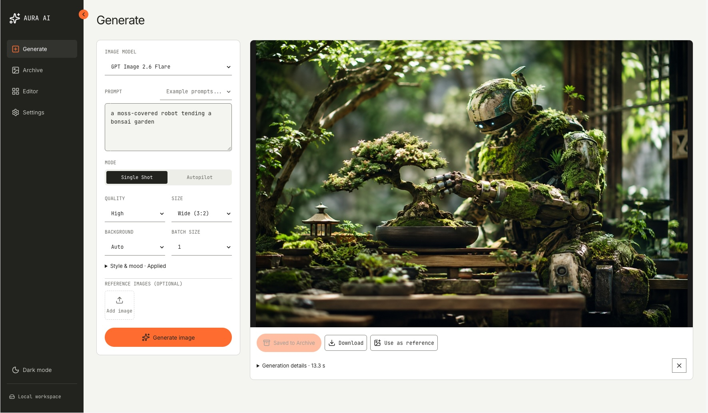
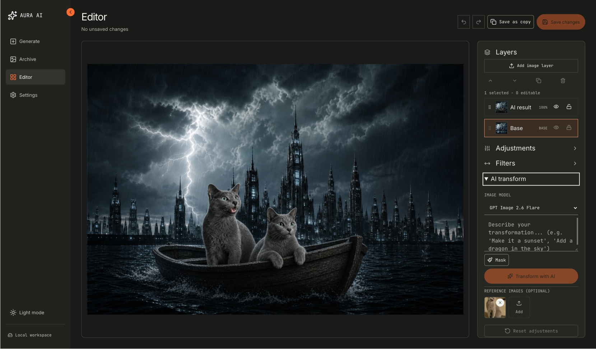
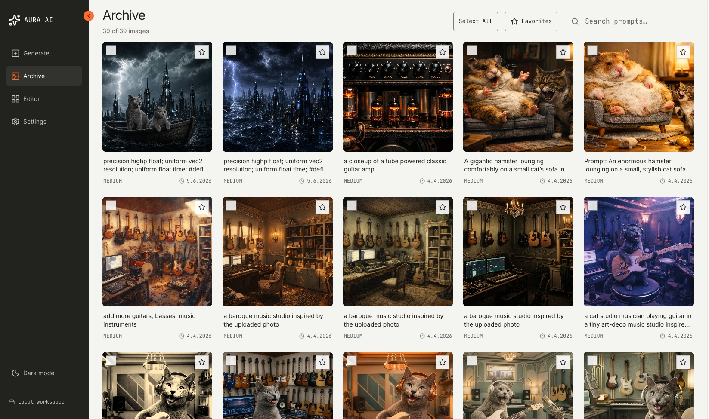
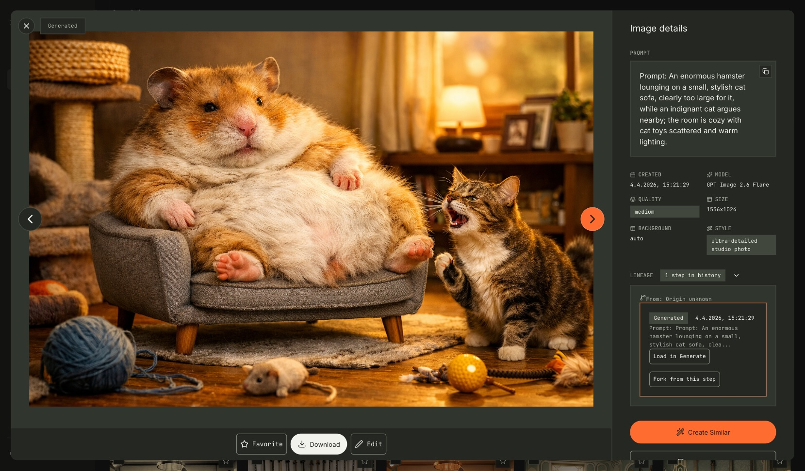

Batch generation
Run one to four images at a time. Save, download, or reuse each result on its own.
Generate with OpenAI, Google, or your own GPU. Edit in layers. Keep every image with the history of how it was made. No account, no backend.




A screen recording of the app, with the waiting sped up. Generate an image, change it with an AI edit on its own layer, then go back to a saved step and branch from it.
Run one to four images at a time. Save, download, or reuse each result on its own.
Guide a generation with your own images, or feed a result straight back in as a reference.
Stack, transform, reorder and blend. AI edits land on new layers, so nothing is overwritten.
Brush over the part to change, describe the edit, and the rest of the image stays put.
Tune brightness, contrast and saturation live, with undo and redo across every change.
See what each image and Autopilot run cost. Missing usage data is marked, never guessed.
Take selected images out with their references, layers and history, and bring them back in.
Two themes, drafts that survive a reload, and a notification when a background run finishes.
Write your own prompt or pick a starter. Then add style, lighting and a colour palette from the optional Style & mood panel. Each choice is added to the prompt and saved with the image.
Stuck on a blank box? Pick a starter, from a lobster piloting a vintage scooter to a porcelain teapot city in the clouds, and edit it from there.
Set the look in one click, from film stills and risograph posters to isometric dioramas and anime.
Light the scene like a photographer would, from a soft studio box to golden hour or hard chiaroscuro.
Three-colour palettes with swatch previews keep a series of images in the same colour family.
| Image model | Quality | Shape | Resolution | Background | Batch | References |
|---|---|---|---|---|---|---|
| GPT Image 2.6 Flare GPT Image 2.6 SunburstOpenAI | Low, Medium, High, Extra high, Max, Auto | Auto, Square 1:1, Wide 3:2, Tall 2:3 | Set by shape | Auto, Opaque, Transparent | 1 to 4 | No app limit |
| Nano Banana ProGoogle | Model default | 10 ratios, from 1:1 and 9:16 to Cinema 21:9 | 1K, 2K, 4K | Model default | 1 to 4 | Up to 14 |
| Qwen Image 2.1Local GPU | Model default | 7 ratios, from 1:1 to 16:9 and 9:16 | 768, 1K, 2K | Auto, Transparent | 1 to 4 | Up to 10 |
| FLUX.2 klein 4BLocal GPU | Model default | 7 ratios, from 1:1 to 16:9 and 9:16 | 1K, 2K | Model default | 1 to 4 | Up to 4 |
Open any archive image on a locked base layer. Stack your own images on top, blend them, adjust the whole composition, and send a layer or the full canvas to an image model.
Set a blend mode and opacity on each layer. These tiles are blended live by your browser.
Shortcuts pause while you type in a text field. Use Ctrl instead of ⌘ on Windows and Linux.
A reasoning model turns your goal into a prompt, looks at each result, scores it, and rewrites the prompt until the image is good enough.
Find images by prompt, star the keepers, and select in bulk.
Each save records its prompt, model, references and masks. Reload any step, or branch from it.
AURA has no server of its own. Your keys and images stay on your device, and requests go straight to the provider you pick.
localStorage, sent only to their own provider.IndexedDB.SQLite database, in the browser.sd-server, with no API charge.There is no backend service. Everything is stored in your browser until you export a ZIP.
| Store | What it holds |
|---|---|
localStorage | Provider API keys and the local server URL. View state, generation drafts, settings per image model, Autopilot settings, archive search, the favorites filter, the notification preference and the last image opened in the Editor. |
IndexedDBidb-keyval | Flattened images, reference images and per-layer image files. The current batch results, references passed between views, and Editor drafts. Older drafts move over from localStorage when opened. |
SQLiteSQLocal | Archive metadata with favorites and layer stacks, including Qwen's model, aspect ratio, resolution, background and requested size. Lineage for Generate, Editor, Autopilot and transform-mask steps, with actual parameters. |
| ZIP bundle | Images, references and layer files, plus archive-manifest.json and lineage-manifest.json. Import, export, delete, copy and recovery all use the same manifest format. |
The browser calls each provider directly. Image responses arrive as base64 and become data URLs for preview and storage.
| Provider | Generate | References and AI edits | Autopilot reasoning |
|---|---|---|---|
| OpenAI | POST /v1/images/generations, streaming partial previews for single images | POST /v1/images/edits, with the painted mask where supported | POST /v1/responses |
Gemini generateContent, one parallel request per batch image | Gemini generateContent with inline image parts | Gemini generateContent | |
| Local serversd-server | POST /v1/images/generations, the whole batch in one call | POST /v1/images/edits | Uses your OpenAI or Google key |
GET /v1/models.Needs Node.js 26 or newer. Open the app, add an API key or a local server URL in Settings, and generate.
Read the docs$ git clone https://github.com/rupertgermann/ai-image-aura.git $ cd ai-image-aura $ npm install $ npm run dev